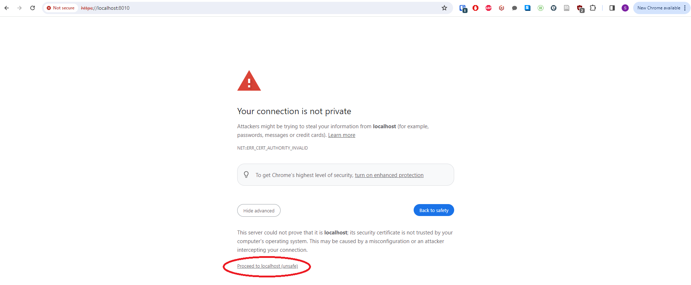

Quick Start
The server code is included in the Ubiq repository in the Node directory.
After checking out the code, run,
npm install
in the Node directory. The server can then be started with,
npm start
This will start a server with the default TCP port - the same one running on Nexus - that Unity can connect to. Continue below if you also need to support Browser Clients.
Advanced
Supporting Secure WebSockets
If you are intending to create Browser Clients with Ubiq's JavaScript library, you will need to support Secure WebSockets.
This is done by providing a certificate for the server.
The quickest way to do this is to create a self-signed certificate using, e.g. OpenSSL. In the Node directory, give the command,
openssl req -nodes -new -x509 -keyout key.pem -out cert.pem
If successful, starting the server will look something like:
Added RoomServer port 8009
Added RoomServer port 8010
Added status server on port 8011
Self-signed certificates are unlikely to be accepted by default on most browsers. You will need to visit,
https://localhost:8010
And agree to proceed, before that browser will establish Ubiq connections.

Using VSCode
If you would like to run the server in VSCode, open the Node Folder in VSCode, and create the following launch configuration,
{
"type": "pwa-node",
"request": "launch",
"name": "Launch Server",
"skipFiles": [
"<node_internals>/**"
],
"env": {"NODE_OPTIONS": "--loader ts-node/esm"},
"program": "${workspaceFolder}\\app.ts",
"console": "integratedTerminal"
}
Status Module API Keys
If you want to limit access to the sensitive status module pages/APIs, you need to specify one or more API keys, for example:
{
"status":{
"apikeys": ["bf692145-80b1-40da-ba53-9c9dfdf7a5a7"]
}
}
You can copy this snippet into a new config\local.json file, or add your keys into the existing empty apikeys member in config\default.json.
Alternatives ways to start the server
The server can also be started with:
node --loader ts-node/esm app.ts
or
NODE_OPTIONS="--loader ts-node/esm"
node app.ts
This is because server project is written in TypeScript and is set up to use the Node ESM Loaders feature to execute TypeScript (.ts) files directly without transpilation.
This requires the correct loader to be specified, which is done using the --loader parameter, either each time Node is started, or through the NODE_OPTIONS environment variable. (npm start is simply an alias for node --loader ts-node/esm app.ts).